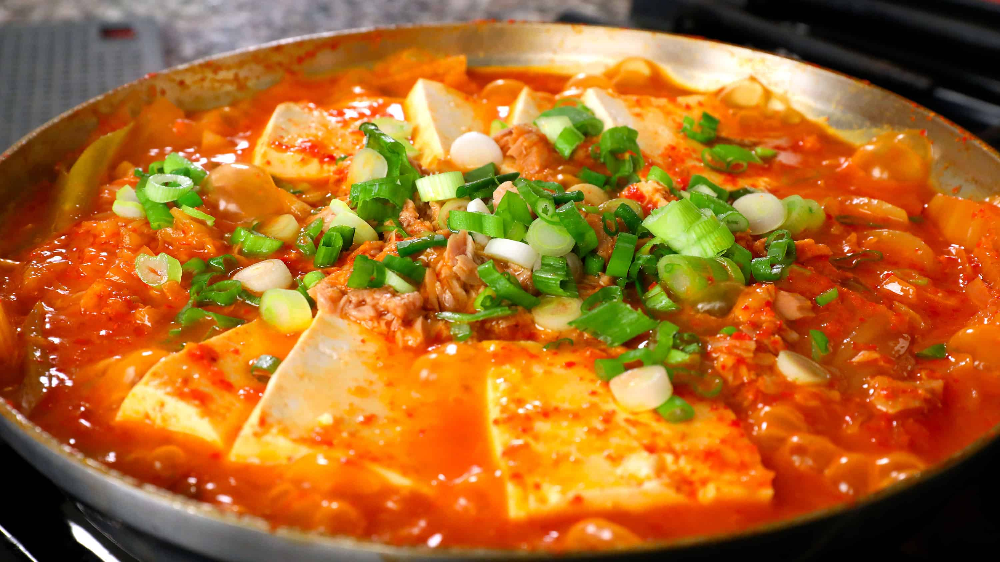

김치찌개
재료와 가격
김치 - 3,000원(g)
돼지고기 - 5,000원(g)
두부 - 1,500원(g)
양파 - 500원(g)
마늘 - 300원(g)
고춧가루 - 200원(g)
총 가격 :
0원
만드는 법
1. 돼지고기와 양파를 썰어서 기름에 볶아주세요.
2. 김치를 넣고 5분 정도 더 볶아줍니다.
3. 물을 붓고 끓기 시작하면, 두부와 마늘을 넣습니다.
4. 고춧가루와 간장을 넣고 끓여주세요.
5. 10분 정도 끓인 후, 맛을 보고 필요하면 소금을 추가합니다.
6. 완성된 김치찌개를 그릇에 담고, 뜨겁게 드세요!